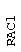
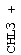
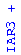

|
Classical
The classical map was originally built using genetic distances based on recombination frequencies between visible markers. Other mutant genes were later cloned and placed on the recombinant inbred (RI) map or assigned a position relative to molecular markers on the RI and/or physical maps. The major function of the classical genetic map is to show the relative locations of genes identified by mutation.
The most recent update of this map was performed in August, 1998.Absolute locations will eventually be revealed by sequencing the entire genome.
Classical Map Key
 black marker  black with "+" cloned blue position derived from RI map  blue with "+" cloned and position derived from RI map For more information about the TAIR genetic map display, see "Close-Up on Genetic Maps".
D.W. Meinke, J.M. Cherry, C. Dean, S.D. Rounsley & M. Koornneef (1998) Arabidopsis thaliana: A model plant for genome analysis. Science 282, 662.
Data from: http://mutant.lse.okstate.edu/classical_map_dir.html
Data maintained by: David Meinke, Iris Tzafrir, Todd C. Nickle
| To report problems: curator@arabidopsis.org |
|